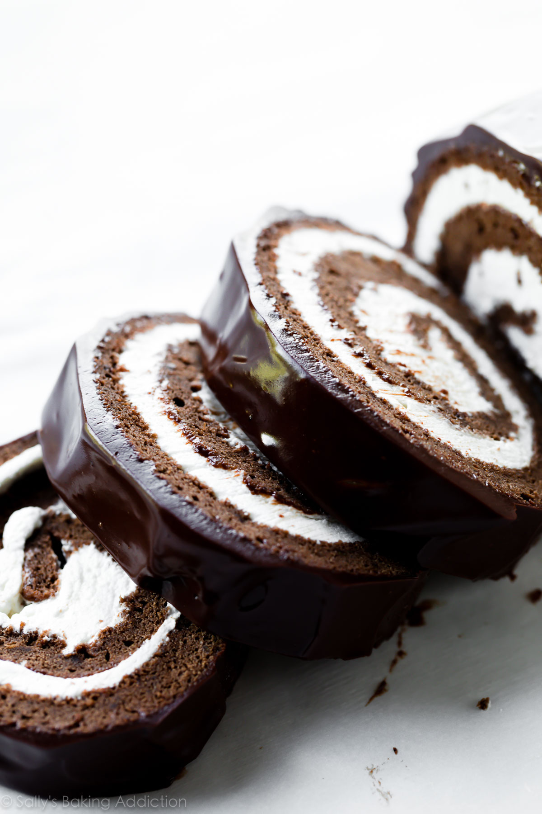

Swiss Roll

Description:
A light and fluffy chocolate cake roll filled with thick vanilla
whipped cream and covered in rich chocolate ganache. Guaranteed
to mysteriously disappear within a day or two.
Ingredients:
Cake:
- 4 large eggs, separated
- 2/3 cup (135 g) sugar, divided
- 1 tbsp espresso or 1 tsp espresso powder
- 1/4 cup (60 g) butter, melted
- 1 tsp vanilla extract
- 1/2 cup (63 g) flour
- 3 tbsp cocoa powder, plus 1 for dusting
- 1 tsp baking powder
- 1/4 tsp salt
Whipped cream:
- 1 cup (240 ml) heavy cream
- 3 tbsp (38 g) confectioner's sugar
- 1 tsp vanilla extract
Ganache:
- 1/2 cup (120 ml) heavy cream
- 4 oz (113 g) semi-sweet chocolate, finely chopped
- 1 tsp corn syrup
Instructions:
Prepare:
- Preheat oven to 350°F (177°C). Spray a 12x17 inch baking pan with nonstick spray or grease with butter, so the parchment paper sticks. Then line it with parchment paper so the cake seamlessly releases. Spray or grease the parchment paper too. We want an extremely nonstick surface for this cake roll.
Make the cake:
- Using a hand mixer or a stand mixer fitted with whisk attachment, beat the egg whites and 1/3 cup (67g) granulated sugar together in a medium bowl on high speed for 5 minutes or until stiff peaks form. Set aside. In another bowl, beat the egg yolks, remaining sugar, and vanilla extract together until pale and creamy, about 2 minutes.
- Sift the flour, 3 Tablespoons cocoa powder, baking powder, and salt together into a large bowl bowl. Pour the melted butter, coffee, and egg yolk mixture over the dry ingredients. Beat everything together on medium speed until completely combined. Using a rubber spatula or wooden spoon, gently fold in the egg whites until completely combined. Avoid over-mixing and deflating those whites. Batter will be very light.
- Spread batter evenly into prepared pan. It will be a very thin layer. Shimmy the pan on the counter to smooth out the top. Bake for 10 minutes or until the top of the cake gently springs back when touched with your finger. Do NOT over-bake.
Prepare to roll:
- As the cake bakes, place a piece of parchment paper (larger than the cake) or a thin kitchen/tea towel flat on the counter. (Note: I find a kitchen towel is better to help prevent cracking.) Using a fine mesh sieve, dust parchment/towel with 2 Tablespoons of cocoa powder. Once the cake comes out of the oven, quickly run a knife around the edges to loosen it. Immediately invert it onto the parchment/towel. Peel off the parchment paper that was on the bottom of the cake as it baked. Starting with the narrow end, begin tightly rolling the hot cake up with the parchment/towel. Do this slowly and gently. The cake will be warm. Allow the cake to cool completely rolled up in the parchment/towel, at least half an hour.
Add the whipped cream:
- Using a hand mixer or a stand mixer fitted with a whisk attachment, whip the heavy cream, sugar, and vanilla extract on medium-high speed until medium to stiff peaks form, about 2-3 minutes. Be careful not to over-mix.
- Slowly and gently unroll the cake. Spread whipped cream evenly on top, leaving about a 1/2 inch border around the cake. Gently roll the cake back up, without the parchment/towel this time. Place on a wire rack set on a baking sheet (to catch the extra ganache). Set aside on the counter or in the refrigerator as you prepare the ganache.
Add the ganache:
- Place chopped chocolate and corn syrup in a medium bowl. Heat the cream in a small saucepan until it begins to gently simmer. (Do not let it cometo a rapid boil- that's too hot.) Pour over chocolate, then let it sit for 2-3 minutes to gently soften the chocolate. Slowly stir until completely combined and chocolate has melted.
- Wait until ganache cools down slightly and has a thicker texture, about a minute. Pour ganache all over cake roll. Feel free to spoon up any dripped ganache and spoon over the cake again. Refrigerate for at least 30-60 minutes before slicing and serving.